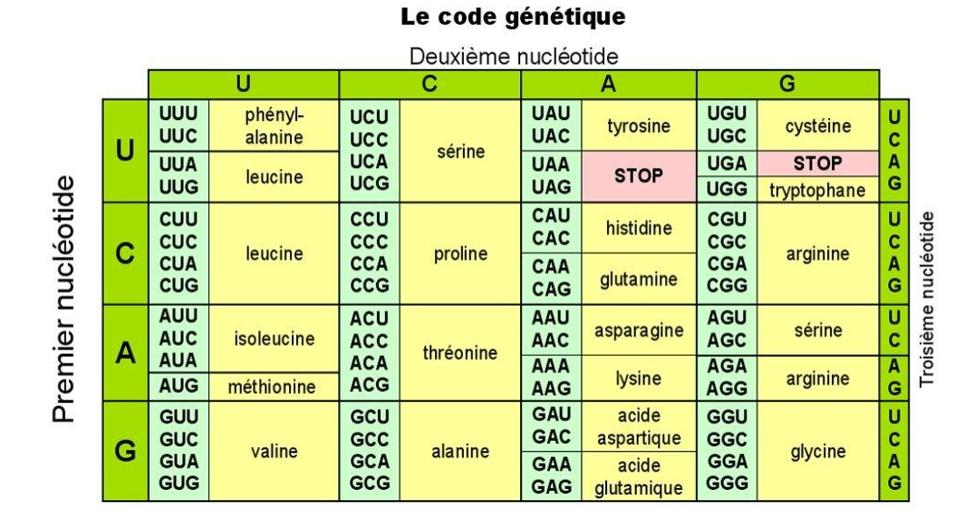

Génétique Mendélienne
L’ensemble des gènes d’un individu forme de génotype. Les caractères exprimés chez un individus, resultant d’interactions entre l’environnement et le génotype forment le phénotype.
Les gènes sont présents chez les individus diploïdes sous forme d’allèle. Ainsi, On distingue des allèles récessifs des allèles dominants. Les allèles dominants prennent le pas dans leur expression sur les allèles récessifs.
Un individu est dit homozygote si il possède les deux meme allèles dans les paires.
Lois de Mendel
Monohybridisme
Le mono-hybridisme c’est l’étude d’un seul caractère. C’est la base de de la génétique mendélienne.
Lors du croisement de deux parent qui expriment des phénotypes et on observe :
- à la première génération la dominance absolue du caractère , puis
- à la deuxième génération:
- un taux de et si autofécondation
- si croisement avec
Mendel explique ces dynamiques par la présence d’allèles, et de caractéristiques de dominance et récéssivité.
Ainsi, d’après lui, les parent () possèdent respectivement des paires homozygotes et . À la première génération, tous les enfants sont hétérozygotes et domine. À la deuxième génération, on à 4 possibilité équiprobables :
- → expression de
- → expression de
- → expression de
- → expression de
Dyhybridisme
On peut aussi étudier des paires de caractéres et .
Dans ce cas la, on observe une dominance de l’expression sur la première génération. Pour la deuxième génération on à possibilité avec :
Géneralisation et extension
Ces lois ne sont pas parfait et il existe des phénomènes qui y échappent.
Codominance
Parfois, la présence de deux allèles ne va pas se traduire la la dominance d’un allèle mais plutot une combinaison et l’expression d’un caractère unique aux individus hétérozygotes.
Par exemples un allèle impliqué dans une couleur rouge et un allèle impliqué dans la couleur blanche pourraient conduite à l’expression d’une couleur rose dans le cas d’une combinaison .
On aurait donc en :
- rouge ()
- rose ou
- blanche
Gènes liés
Parfois on à aussi affaire à des gènes liés, c’est à dire des gènes présents sur le même chromosome. Cela mêne à un hérédité commune des caractères génétiques. Néanmoins, il existe un phénomène de crossing-over qui produit des chromosomes recombinés et permet le mélange des gènes.
Les proportions Mendéliennes ne sont pas respectées.
La probabilité de crossing-over est liée à la distance physique entre les gènes sur le chromosome.
Influence du sexe
Certains gènes sont directement liés au sexe, ce qui va influencer leur expression et possiblement invalider les proportions Mendéliennes.
Allèles létaux
Dans un cas de Mono- ou Di- hybridisme, il peut y avoir une combinaison précise de gène qui tuerait l’individu ou même son embryon, faussant ainsi les proportions.
Biodiversité
Comment l’ADN contrôle-t-il la réalisation des caractères qu’il encode ?
Une protéine est une macromolécule non-linéaire !
La structure primaire d’une protéine correspond à sa sequence d’acides aminés.
Sa structure secondaire peut être classifié dans plusieurs modèles :
- Les hélices dans lesquelles les acides aminés sont enroulés sur eux même en hélice
- Les feuillets dans lesquels les acides aminés sont empilés en couches les uns sur les autres
Les protéines possèdent aussi une structure tertiaire, c’est à dire leur forme globale dans l’espace en .
Elle peuvent même avoir une structure quaternaire, c’est à dire l’agencement de plusieurs protéines en chaines protéiques.
Une protéines interagit avec sont environnement de nombreuses manières différentes. Elle peuvent posséder des élément hydrophiles, hydrophobes, chargés positivement ou négativement, des chaines latérales polaires.
ARN
L’ARN ou acide ribo-nucléique constitue un intermédiaire entre l’ADN et la formation de protéines.
Les molécules d’ARN sont capables de se replier et d’avoir une structure en 3D.
L’ADN est transcris en ARN, dans le language des bases azotées par l’ARN polymérase. L’ARN polymérase lit le brin matrice de l’ADN depuis sont coté 3’ jusqu’à son coté 5’ et se sert de l’information pour polymériser c’est à dire former de l’ARN. L’ARN prends une coiffe protectrice qui la transforme en ARN messager.
Une fois que la polymérase est passée, la double hélice se reforme.
Le promoteur est la région de l’ADN portant des séquences régulatrices qui déterminent le site d’inflation de la transcription et contrôlent le niveau de transcription du gène.
La TATA-box détermine la position de l’ARN polymérase nucléotides plus loin.
La TBP est la TATA-box binding protein.
La polymérase s’arrête quand elle trouve un signal de terminaison de la transcription, ou elle va se détacher et s’attacher avec une queue poly-A.
L’ARN est composée d’introns et d’exons. Les introns ne sont pas retrouvés dans la protéine. Ils sont enlevés. Les exons servent à la formation de la protéine.
Les caractères exprimés sont définis dans le code génétique universel, qui régit la formation de protéines. Ce code est composés de triplets de nucléotides, ont chacun une expression spécifique en acides aminés.

On appelle les triplet de nucléotides qui encodes les différents acides aminés codons. L’anticodon c’est les nucléotides qui sont capables de reconnaître les codons.
L’ARNt possède un anticodon, et est attaché en fonction de son anticodon à un acide aminé. Ainsi, l’ARNt permet la réalisation du code génétique, en s’attachant a des codons en suivant leur séquence, pour ensuite libérer des acides aminés et former des protéines.
Ribosomes
Les ribosomes sont capables de venir se fixer sur l’ARN messager. Il contient trois chambres dans lesquelles peuvent venir se fixer des ARNt. Ainsi, c’est lui qui va permettre aux ARNt qui possèdent le bon anticodon de venir se fixer sur l’ARN message.
Les ribosomes sont composés de plein de choses différentes, dont des ARN ribosomiques.
La traduction de l’ARN commence par un premier codon START et finit toujours par un codon STOP. le codon START est reconnu par le ribosome, qui va initier le processus de traduction en apportant les ARNt.
A la fin de la traduction, le ribosome arrive sur un codon STOP, auquel ne correspond aucun anticodon, stoppant ainsi la transcription. La transcription et la maturation de l’ARN ont lieu dans le noyau, mais le e travail des ribosomes à lieu dans le cytoplasme.
Sections de l’ARN
L’ARN est composé de plusieurs sections :
- Au début, on à le UTR (un-translated region)
- Ensuite, à partir du codon START on à une région codante qui est traduite
- Après le codon STOP qui détache le ribosome, on à du UTR qui n’est pas traduite.
Le de transcription correspond au premier nucléotide transcrit.
Toutes nos cellules ont un génome identique. Néanmoins, tout les gènes ne s’expriment pas partout.
Le transcriptome correspond à l’ensemble des gènes qui sont exprimés, en opposition aux gènes qui sont éteints.
On est capable de transformer de l’ARN en ADN. Grace aux virus.
La technique de PCR (polymerase chain reaction) permet de multiplier des bouts spécifiques d’ADN.
La régulation de la transcription d’opère pas des protéines.
OGM
Les mutations génétiques sont responsables de la biodiversité qui existe aujourd’hui.
La transformation bactérienne est une des voies de modification du génome. L’expérience de Griffith en est un example. Les bactéries sont capables d’acquérir des portions du génome d’autres bactéries.
On à pu faire rentrer un plasmide (petite molécule d’ADN circulaire) dans des bactéries pour leur transmettre un phénotype de résistance à des antibiotiques.
L’expérience de Griffith montre un transfert de gènes à travers la meme espèce. Il existe néanmoins d’autre types de transferts, appelés transferts horizontaux qui correspondent à la transmission d’un gène d’une espèce vers un autre.
Les différences entre les plantes et les humains sont bien moindres que celles entre des bactéries.
Transfert honrizontaux
La plupart des bactéries sont capables de transformation par absorption d’ADN. L’ADN accepté par la bactérie est sélectionné par pression évolutive, …
Certains bactéries, possèdent 25% de leur génome qui à pour origine de l’ADN d’une autre bactérie.
Le gène IRBP, est nécessaire à la vision, permettant la réutilisation du retinal, un élément photosensible de l’œil. Il s’agit d’un gène plutôt singulier, mais il présente des similarités fortes avec un collage de 4 Peptidase, des gènes utilisés sur les bactéries pour recycler les peptides.
L’hypothèse la plus probable sur l’apparition de l’IRBP est l’acquisition chez l’ancêtre des vertébrés du gène Peptidase.
Virus
Certains virus peuvent modifier le génome de leur hôte, comme les rétrovirus.
Par exemples, le VIH infect des cellules comme les lymphocites. Un virus est un parasite qui détourne le fonctionnement de la cellules pour la faire reproduire son ADN.
Si un virus infecte la lignée germinale il va pouvoir transmettre certains caractéristiques génétiques aux descendants de son hôte.
On sait aujourd’hui qu’il y à a peu près 8% de notre génome qui correspond à de l’ADN de virus qui s’est accumulé dans notre système. Cette ADN peut parfois avoir un rôle très important dans notre métabolisme. Cet ADN de virus sert par example à la régulation du placenta. Le placenta est la zone de contact entre l’embryon et la paroi utérine.
Note: Le VIH n’est pas transmis à la descendance, il n’atteint pas la lignée germinale.
La trans-génèse regroupe tout les mécanismes et toutes les bio-technologies qui permettent de transmettre un gène d’une espèce donnée dans le génome d’une autre espèce. Les méanismes de transgénese permettent de créer des OGM.
Pour l’INSERM un OGM est un organisme qui à subit la trans-gènese c’est à dire qui est porteur d’un transgène. Un transgène c’est soit un gène qui vient d’une autre espèce, soit un gène qui vient de la même espèce, mais qui à été modifié par l’homme.
Pour la loi française, sont des OGM tout les organisme dont le génome à été modifié d’une façon qui n’est pas naturel.
On peut prendre l’éxemple des souris GFP.
Lors d’une modification génétique, on utilise un marqueur de séléction qui nous permet d’identifier les génes nécéssaires.
Afin de modifier des cellules animales, on utiise des rétrovirus modifiés, sans son génome propre, mais avec uniquement l’adn qu’on veut intégrer aux cellules.
Souris transgéniques
Afin de modifier génétiquement des souris on utilise des cellules souches, c’est à dire des cellules qui peuvent se multiplier et adopter différentes identités. Les humains ont peu de cellules souches.
Ainsi, on récupère des cellules souches embryonnaires, on leur applique le retrovirus pour leur transmettre le transgène et on les mets dans un embryon de souris. Elle vont donc s’intégrer à l’embryon et se développer dans l’individu.
Agrobacterium tumefaciens
l’Agrobacterium est une bactérie qui fait de la trans-genèse naturelle, en transmettant son ADN T dans la plante hôte. Ainsi, par son infection, donne lieu à une prolifération incontrôlée des cellule de la plante, et se fait fabriquer des nutriments par la plante.
Afin de produire des OGM, on détourne ce système en modifiant l’ADN T pour lui enlever les gènes qui créent la tumeur et les remplacer par des génes qui nous intéressent.
Les plantes ont l’avantage d’avoir toute leur cellules qui permettent de générer une plante entière. Ainsi, on peut leur appliquer l’Agrobacterium puis selectioner toutes les cellules modifiées et relancer une culture à partir des cellules qui ont bien été modifiées.
Les OGM peuvent être utilisés pour la recherche fondamentale. On peut se servir de gènes comme la GFP pour comprendre les mécanismes de transmissions génétiques. On peut avoir une vue très précise, au niveau de la cellule.
On peut aussi de servir des OGM pour sur-exprimer des gène, et comprendre leur fonction.
Aujourd’hui, les OGM wont très répandus.
En agriculture classique, on considère que toute plante qui pousse a coté de plantes de culture est une “mauvaise herbe”. Depuis la révolution industrielle, on utilise des herbicides pour tuer tout sauf la plante cultivée. On ne peut néanmoins pas utiliser des herbicides très puissants, parce que sinon, la plante cultivée meurt aussi.
Monsanto utilise la combinaison d’un herbicide très puissant, le glyphosate et de plantes génétiquement modifiées pour y être résistantes afin de pouvoir tout tuer de manière aggressive, de manière hautement sélèctive sur la plante cultivée.
On estime que chaque année, 10 à 15% des cultures sont détruites par des ravageurs.
CRISPR/Cas9
Certains virus appelés phages attaquent les bactéries. Sous cette pression évolutive, certaines bactéries ont développé des système de protection contre les virus et les plasmides intrus.
La région CRISPR dans une bactérie est une région composée de paire de bases identiques, disposés en losanges, qui est transcrite en un ARN un peu bizzare. En effet, la transcription de cette région donne naissance à des petites tiges qui possèdent une boucle.
Ces tiges sont formées pour guider des protéines compémentaires. Ainsi, les tiges produites par la région CRISPR sont complémentaire de la protéine cas9, qui est une nucléase.
La protéine cas9 va cliver l’ADN, ce qui va provoquer une réparation par la cellule, et donc potentiellement une mutation. Cette mutation est transmise par la cas9 mais ne cecessite pas l’introduciton d’un transgène.